What Happened in 2021
Before 2021, a fall in Chinese home prices was usually temporary. Across the 70 cities in the official price survey, when a city's second-hand prices had fallen over the previous 12 months, they rose over the next 12 months 71% of the time in 2011–2020. Since 2021, that has happened 1% of the time. This note shows where the break happened, what it does to the signals people use to call a bottom, and where the 2026 rebound in Shanghai stands.
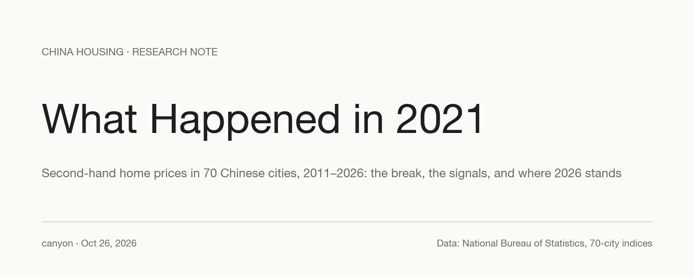
Contents · 10 sections
- Summary
- Since 2016: 13 of 35 large cities have given back all their gains
- The break: 41 rising cities in July 2021, 4 in October
- Before 2021, falls were followed by rises. Since 2021, falls have been followed by falls
- What changed in 2020–21
- "Everyone is bearish" is not a bottom signal
- Stocks used to lead first-tier prices by about a year. Since 2021, that link has faded
- Six straight monthly gains: right 91% of the time before 2021, 27% since
- Where 2026 stands: Shanghai is up, 69 of 70 cities are not
- Data and method
Summary#
- Ten years on, 13 of the 35 large and medium cities are below their January 2016 level. The median city is up just 3.2% since then. Hangzhou (+36.8%), Shanghai (+35.3%) and Beijing (+34.2%) are still about a third higher; Zhengzhou (−12.5%) and Guiyang (−10.5%) are lower. All 35 are below their January 2021 level.
- The break came in the second half of 2021. The number of the 70 cities with rising prices fell from 41 in July 2021 to 4 in October. It has not been at or above 35 for six straight months since. It was zero in October, November and December 2025, and 9 in September 2026.
- Falls used to be followed by rises. Since 2021, falls have been followed by falls. After a 12-month fall, prices rose over the next year 71% of the time in 2011–2020 and 1% of the time since. After a 12-month rise, prices kept rising 73% of the time before and 20% since.
- Stocks used to lead first-tier home prices by about a year. Before 2021, the CSI 300's 12-month return had a 0.45 correlation with first-tier price changes 12 months later. Since 2021 the figure is 0.17. In the same month, stocks and home prices are not positively correlated at all.
- "Six straight monthly gains" was a reliable bottom signal before 2021 and an unreliable one since. After a fall, it was followed by a 12-month rise 91% of the time before 2021 (103 signals) and 27% of the time since (15 signals). Shenzhen gave the signal in March 2025 and fell 6.3% over the following year.
- Shanghai is now the only one of the 70 cities with prices above a year earlier (+0.8% in September, after eight straight monthly gains). Shanghai's six-month signal fired with the July data, Shenzhen's with August. Their outcomes are not yet known.
Since 2016: 13 of 35 large cities have given back all their gains#
The National Bureau of Statistics (NBS) publishes monthly price indices for second-hand homes in 70 cities. NBS groups 35 of them as large and medium cities: the four first-tier cities (Beijing, Shanghai, Guangzhou and Shenzhen) and 31 second-tier cities, mostly provincial capitals. Exhibit 1 shows each one since January 2016, rebased to 100 and sorted by the change since then.
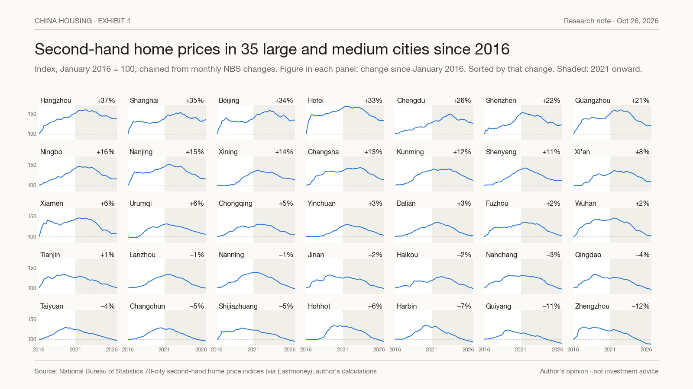
From January 2016 to their peaks, prices rose by between 23% (Guiyang) and 69% (Hefei). Fifteen of the 35 cities peaked in 2021. Seven had already peaked in 2019, mostly in the north and the interior, including Tianjin, Jinan and Shijiazhuang. Nine held on into 2022–23, among them Shanghai (March 2023), Beijing (April 2023), Guangzhou and Hangzhou.
Since their peaks, every city has given back at least a third of its post-2016 gain, 31 have given back at least half, and 13 have given back all of it. Zhengzhou (−12.5% since January 2016) and Guiyang (−10.5%) are furthest below. Hangzhou (+36.8%), Shanghai (+35.3%), Beijing (+34.2%) and Hefei (+33.0%) are still about a third above. The median city is 3.2% above its January 2016 level. Measured from January 2021, all 35 are lower, and the median city is down 20%.
These are official indices. They are built from transactions and adjusted for quality, and they move more smoothly than the listing and transaction data published by property agents, which generally show larger declines. The pattern across cities is the point here, not the precise depth.
Exhibit 2 shows the same 35 cities as a grid of year-on-year changes, taken each December (for 2026, September).
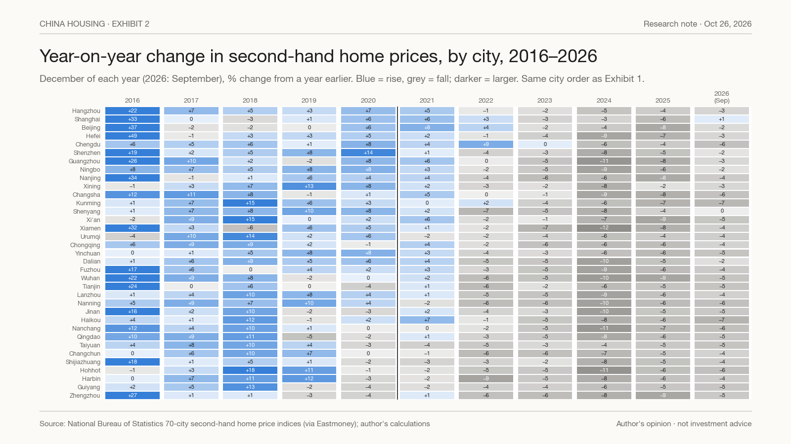
Through 2020, blue dominates. 2016 was the strongest year, with gains above 20% in 10 of the 35 cities (Hefei +49%, Beijing +37%). In December 2021, 26 cities were still higher than a year earlier, because prices rose in the first half of the year. From 2022, almost every cell is grey. The 2024 column is the darkest: three-quarters of the cities fell by 6% or more, and the median city by 7.7%. In September 2026 there is one blue cell in the last column: Shanghai.
The break: 41 rising cities in July 2021, 4 in October#
A simple way to see the change is to count, each month, how many of the 70 cities posted a price rise (Exhibit 3).
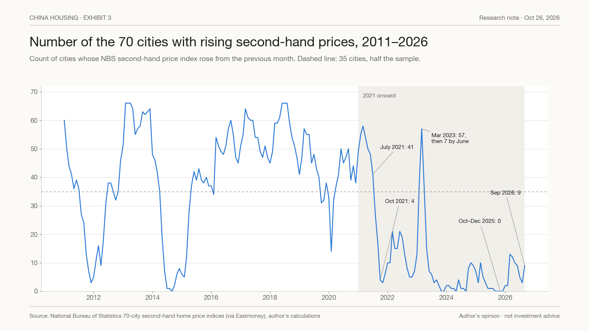
In 2011–2020 the count dropped below 10 twice, in late 2011–12 and in 2014–15. Both times it recovered above 35 within months: from 9 in April 2012 to 38 in July 2012, and from 5 in February 2015 to 37 in May 2015. From 2016 to mid-2021 it was mostly between 35 and 66, with one sharp dip to 14 in February 2020, when the pandemic hit.
Then it collapsed: 41 in July 2021, 27 in August, 17 in September, 4 in October. Since then there have been two rebounds. In March 2023, after the end of pandemic controls, the count jumped to 57, but it was back to 7 by June. After the September 2024 stimulus package, it peaked at 10, in November 2024 and again in March 2025. In October, November and December 2025, not one of the 70 cities recorded a rise. In 2026 the count reached 13 in March and stood at 9 in September.
Every genuine nationwide upswing in this data had at least 35 rising cities for six months or more: from November 2012, May 2015, March 2016 and April 2020. That has not happened since July 2021.
Before 2021, falls were followed by rises. Since 2021, falls have been followed by falls#
Exhibit 4 puts numbers on the change. Each statistic is calculated city by city and month by month across all 70 cities.
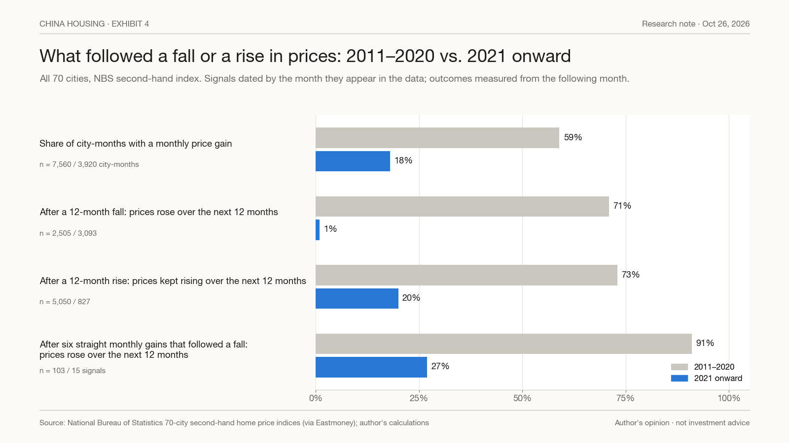
- Monthly gains became rare. In 2011–2020, 59% of city-months showed a price rise. Since 2021, 18%.
- A fall stopped being a buying opportunity. When a city's prices had fallen over the previous 12 months, they rose over the next 12 months 71% of the time in 2011–2020 (2,505 cases). Since 2021, 1% (3,093 cases).
- A rise stopped lasting. When prices had risen over the previous 12 months, they kept rising over the next 12 months 73% of the time before 2021 and 20% since.
- The favourite bottom signal stopped working. Six straight monthly gains after a fall were followed by a 12-month rise 91% of the time before 2021 and 27% of the time since. We return to this signal below.
Before 2021, Chinese housing behaved like a market that reverts to its trend: falls were shallow and bought. Since 2021 it has behaved like a market with downward momentum: falls continue and rebounds fade. Statistics drawn from the first decade describe a different market.
What changed in 2020–21#
The data shows when the break happened. It does not show why. The timing lines up with several events:
- August 2020: regulators set the "three red lines", caps on developers' debt ratios that limited how fast they could borrow.
- January 2021: caps on the share of property and mortgage loans in banks' books took effect.
- September 2021: China Evergrande's cash crunch became public. Default declarations followed in December, and many other developers defaulted over the next two years.
- 2021: China's population peaked, at 1.4126 billion at the end of the year. It fell in 2022, the first decline since 1961. Births fell from 17.86 million in 2016 to 10.62 million in 2021.
- July 2022: buyers of unfinished flats in dozens of projects stopped paying their mortgages in protest.
Before 2021, each downturn was met by stimulus that turned prices back up: rate cuts in 2012, and lower down payments, rate cuts and cash payouts for redeveloped housing in 2015–16. Since 2021 the stimulus has kept coming: rate cuts from 2022; in May 2024, lower down payments, the end of the national floor on mortgage rates and a central-bank relending facility to fund purchases of unsold homes by local state firms; and on September 26, 2024, a Politburo pledge to stop the decline. Prices kept falling until the end of 2025. Our reading: developers had financed construction largely with buyers' presale payments; once buyers stopped trusting that homes would be delivered, that model broke, and lower rates did not repair it.
"Everyone is bearish" is not a bottom signal#
A common argument is that when everyone is bearish on housing, prices must be near the bottom. In stock markets that argument has some force: bearish investors sell, and once they have sold, selling pressure is exhausted. Housing works differently.
- Bearish owners cannot easily act. Homes cannot be sold short, a sale takes months, and an owner-occupier has to live somewhere. Pessimism shows up as a growing stock of listings that have not yet sold, not as selling that has already happened.
- Sellers anchor to what they paid. Owners facing a loss ask higher prices and wait longer (Genesove and Mayer, 2001). Turnover falls first; prices adjust slowly.
- House prices have momentum. Price changes tend to continue over the following year or two and revert only over five years or more (Case and Shiller, 1989; Glaeser and others, 2014).
- Households are still heavily invested. Housing made up 59.1% of urban household assets in the People's Bank of China's 2019 survey. Sentiment can be bearish while holdings remain very long.
Bottoms do occur when sentiment is poor. But sentiment can stay poor for many years before a bottom arrives. Exhibit 10 compares past housing busts with China's decline so far.
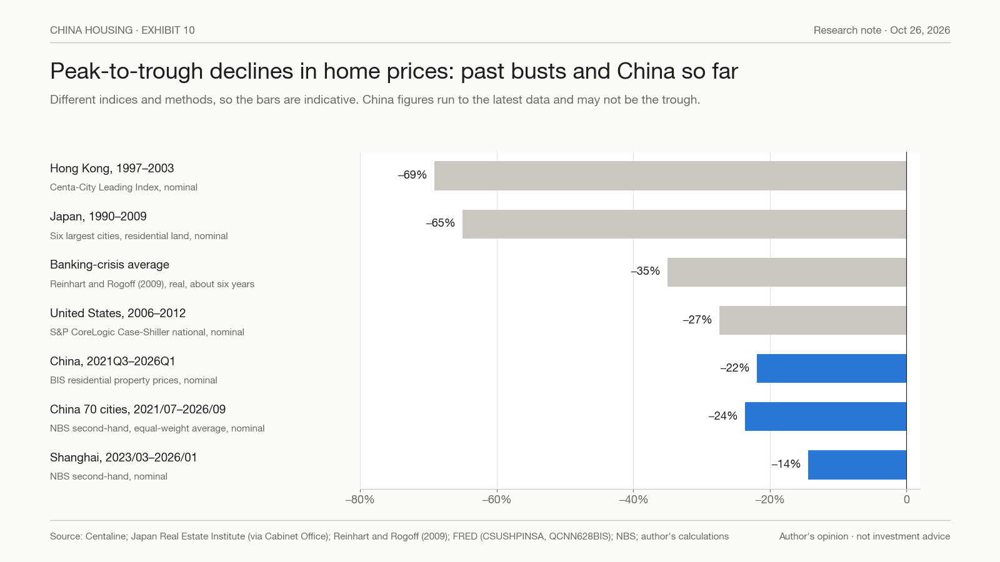
Japanese residential land prices in the six largest cities peaked in September 1990 and were still about 65% lower in 2009: nearly two decades in which the pessimists were right. Hong Kong prices fell 69% from 1997 to 2003. They bottomed only after the SARS outbreak, when a wave of forced selling had run its course (more than 100,000 mortgages, about 22% of the total, were in negative equity in the third quarter of 2003) and new travel and investment links with mainland China (CEPA and the Individual Visit Scheme, both in 2003) brought in new buyers. US prices fell 27% from 2006 to 2012. They bottomed after foreclosures had cleared, interest rates had gone to zero and investors had started buying homes to rent out. Across banking crises, Reinhart and Rogoff (2009) find average real declines of 35% over about six years.
In none of these cases did sentiment alone mark the bottom. What changed was supply (forced sellers cleared), value (rents became high relative to the cost of money) and buyers (new money arrived). By the official measures, China is down 22% (BIS, third quarter of 2021 to the first quarter of 2026) and 24% (70-city average, July 2021 to September 2026), five years in.
Stocks used to lead first-tier prices by about a year. Since 2021, that link has faded#
If stocks price the same credit cycle as housing, they should move first: share prices adjust daily, home prices over months. Exhibit 5 compares the CSI 300 index with first-tier home prices.
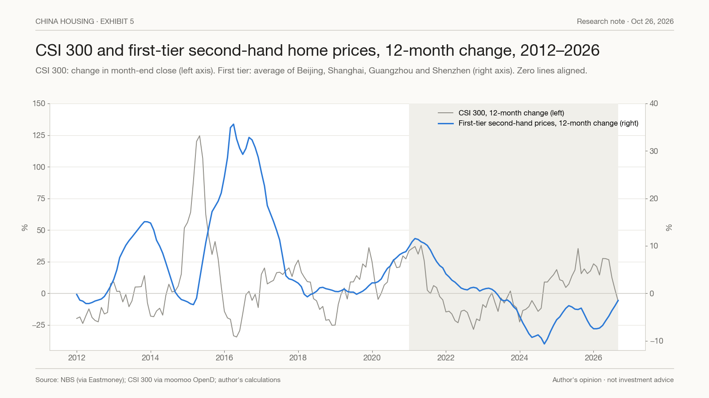
In the same month there is no positive relationship. The correlation between 12-month stock returns and 12-month home-price changes ranges from −0.35 to +0.10 across the index pairs we tested (CSI 300 against the 70-city average: −0.12). The two often move in opposite directions: stocks soared in 2015 while home prices were at a low, and home prices surged in 2016 after the stock crash.
The relationship is in the lags. Exhibit 6 shows the correlation between a 12-month stock return and the change in first-tier home prices k months later, separately for 2011–2020 and for 2021 onward.
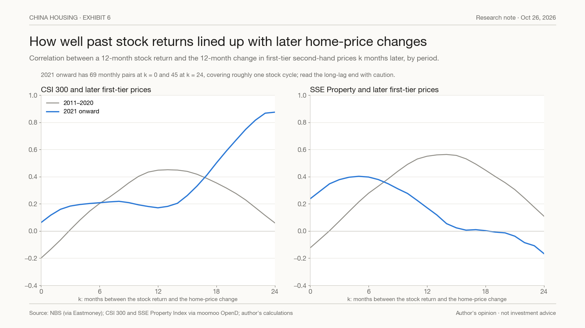
Before 2021, the correlation peaked at about 0.45 for the CSI 300, 12 to 15 months ahead. For the SSE Property Index, the listed developers, it peaked at about 0.56. Since 2021, the 12-month figure is 0.17 for both. The CSI 300 line climbs again at 18 to 24 months, to between 0.5 and 0.87. That rests on roughly one cycle, with stocks bottoming in early and mid-2024 and first-tier prices turning in early 2026, and one cycle is not a rule. Property stocks now move with home prices only a few months ahead (about 0.40 at four to six months). They track developers' credit more than first-tier prices: the SSE Property Index fell 26% between September 2025 and June 2026 and kept falling for four months after Shanghai prices turned up in February.
As a forecasting tool, stocks have been weak. From 2016, using only data available at each point, the direction of home prices over the previous 12 months called the direction of the next 12 months correctly 89% of the time for the 70-city average and 80% for the first tier. The direction of stocks over the previous 12 months was right 52–60% of the time. When the two disagreed, which happened in about 45% of months, the home-price trend was right 58–66% of the time.
Six straight monthly gains: right 91% of the time before 2021, 27% since#
A popular rule for spotting a bottom is to wait for prices to rise for six months in a row. We tested it across all 70 cities, counting only signals that followed a 12-month fall, the situation in which people use it. Over the whole period, six straight gains were followed by a 12-month rise 83% of the time, against 32% for any month in which prices had been falling. Shorter runs were less reliable (one month: 60%; three months: 75%). Waiting for nine months did not help (74%). A turn to year-on-year growth did as well as six months (83%). The cost of waiting is timing: the six-month signal arrived a median 7.5 months after the low, with prices already 2.6% above it.
Split by period, the rule looks very different (Exhibit 7).
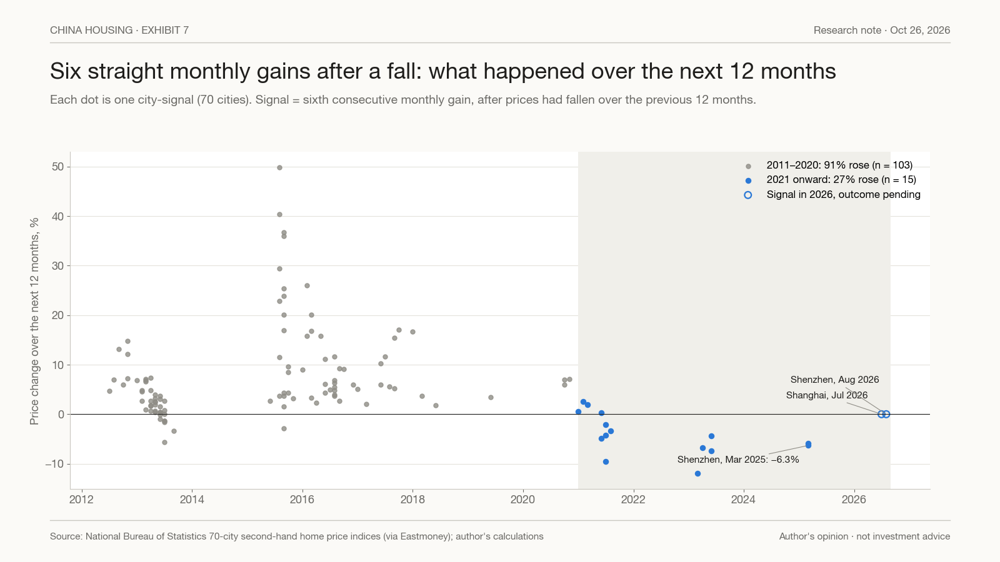
Before 2021 it worked 91% of the time (103 signals). Since 2021 it has worked 27% of the time (15 signals). The failures include Zhengzhou, Qingdao, Tianjin, Harbin and Jinan in mid-2021; Xuzhou, Changsha, Xining and Sanya in 2023; and Chengdu and Shenzhen in March 2025. Shenzhen had fallen 12.8% in the year before its signal and fell another 6.3% in the year after. The four signals since 2021 that were followed by gains produced rises of 2.5% or less. Two signals are still open: Shanghai (July 2026) and Shenzhen (August 2026).
Shanghai has a cleaner record, shown in Exhibit 8.
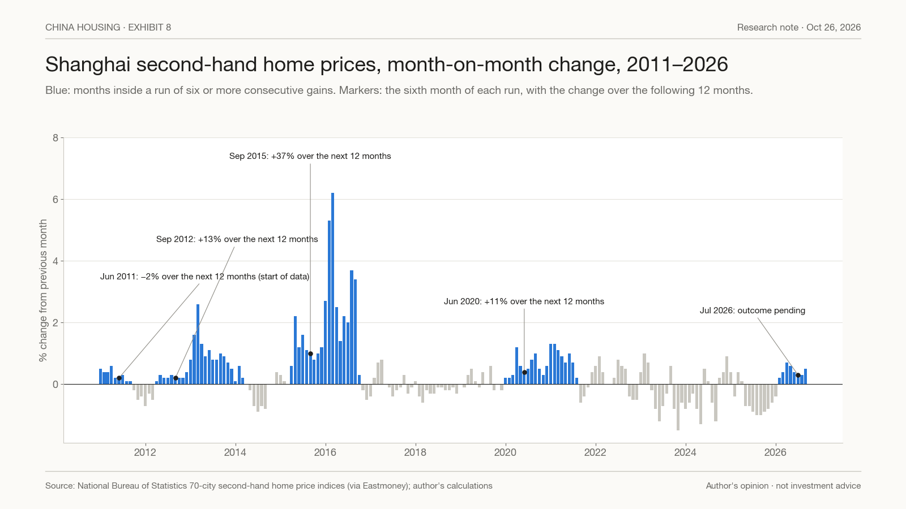
Its six-month signals in September 2012, September 2015 and June 2020 were followed by 12-month gains of 13.1%, 36.8% and 10.7%. A signal in June 2011, at the start of the data and not after a fall, was followed by a 1.6% decline. Between 2021 and 2025 Shanghai had four shorter rebounds, starting in December 2021, June 2022, January 2023 and October 2024. Each lasted three or four months. Measured from the third month of each run, three were followed by declines over the next year (of 1.9% to 7.5%) and one by a small gain (2.8%). None reached six months, so the rule filtered all four.
The six-month rule is a necessary condition, not a sufficient one. It screens out short rebounds. Since 2021, it has not screened out failed recoveries.
Where 2026 stands: Shanghai is up, 69 of 70 cities are not#
Exhibit 9 shows the September 2026 readings, published on October 19.
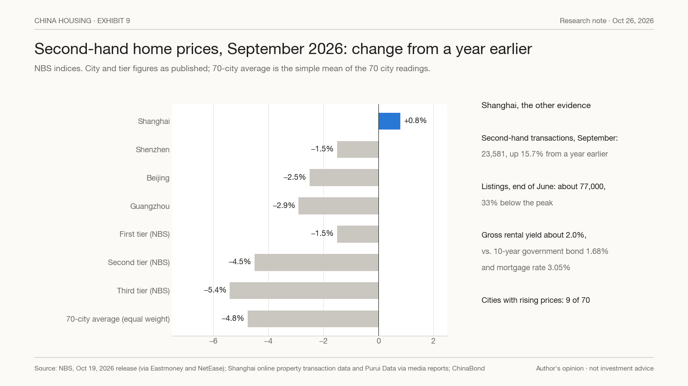
Shanghai's second-hand prices were 0.8% higher than a year earlier, the first and so far only year-on-year rise among the 70 cities. Prices have risen for eight straight months, by about 3.5% from the January low. The rest of the first tier is still down on a year earlier: Shenzhen −1.5%, Beijing −2.5%, Guangzhou −2.9%. Second-tier cities are down 4.5% and third-tier cities 5.4%. Only 9 of the 70 cities posted a monthly rise.
Shanghai also has evidence beyond prices. Second-hand transactions were 23,581 in September, 15.7% more than a year earlier, and have been above 23,000 every month since March; first-half sales were the highest for five years. Listings were about 77,000 at the end of June, a third below their peak. Rents were 1.25% higher than a year earlier in August. The gross rental yield, about 2.0%, is above the 10-year government bond yield of 1.68% but below a typical mortgage rate of about 3%. For a cash buyer, rent now roughly matches what a government bond pays, before costs. For a buyer with a mortgage, rent does not yet cover the interest.
So Shanghai has rising prices, rising turnover and falling inventory. That is more than most of the cities that gave false signals since 2021 could show. But the national picture has not changed. Nine rising cities out of 70 is the pattern of a first-tier rebound, not of a nationwide upswing. A Shanghai bottom and the end of the post-2021 market are two different questions, and the data so far answers only the first, provisionally.
Data and method#
Price data are the NBS 70-city second-hand residential price indices (month-on-month, previous month = 100), January 2011 to September 2026, obtained through the Eastmoney data centre. City indices are chained from the monthly changes. The 70-city average is the simple mean of the 70 monthly changes; the first tier is the mean of Beijing, Shanghai, Guangzhou and Shenzhen. Year-on-year figures in Exhibits 2 and 9 are as published by NBS. A signal is dated by the month of the data that produces it, and outcomes are measured from the following month, since data are published about two weeks after the month ends. Stock data are monthly closes of the CSI 300 and the SSE Property Index. Correlations use overlapping 12-month changes, which makes them look more precise than they are; the 2011–2026 sample contains only three or four housing cycles, and the post-2021 period is less than six years long.
This note reflects the author's opinions as of October 26, 2026. It is not investment advice or a recommendation to buy or sell any security or property. Historical patterns may not repeat.
Sources
- National Bureau of Statistics, 70-city residential price indices, via Eastmoney data centre: https://data.eastmoney.com/cjsj/newhouse.html
- NBS September 2026 release and interpretation (October 19, 2026), via NetEase: https://www.163.com/news/article/L9JGVPP90001899O.html
- Shanghai's year-on-year rise in September, The Paper: https://www.thepaper.cn/newsDetail_forward_34279437
- Shanghai September transactions: https://news.10jqka.com.cn/20261013/c680611217.shtml
- Shanghai first-half transactions and listings: https://m.sfccn.com/2026/7-15/wMMDE0MDdfMjE4MzIwMg.html and https://m.thepaper.cn/detail/34111567
- Shanghai rental yields, broker report (May 2026): https://pdf.dfcfw.com/pdf/H3_AP202605311823105585_1.pdf
- Shanghai rents, China Index Academy, via Gelonghui: https://m.gelonghui.com/live/2655821
- 10-year government bond yield, ChinaBond, via Sina Finance: https://cj.sina.com.cn/articles/view/5069478980/12e2a1c4401901p4zu
- Hong Kong Centa-City Leading Index and negative equity, HK01: https://www.hk01.com/財經快訊/76121/樓市狂潮-逢-7-泡沫必爆-當下樓市與97年爆煲前的分別
- Japan six-city residential land price index (Japan Real Estate Institute), Cabinet Office monthly economic report appendix: https://www5.cao.go.jp/keizai3/getsurei/2010/04shihyou/shihyou3-3.pdf
- S&P CoreLogic Case-Shiller US National Home Price Index (CSUSHPINSA) and BIS residential property prices for China (QCNN628BIS), via FRED: https://fred.stlouisfed.org/
- CSI 300 and SSE Property Index monthly closes, via moomoo OpenD.
- People's Bank of China, 2019 survey of urban household assets and liabilities; NBS statistical communiqués on population and births.
- Case, K. and Shiller, R. (1989), "The Efficiency of the Market for Single-Family Homes", American Economic Review 79(1).
- Genesove, D. and Mayer, C. (2001), "Loss Aversion and Seller Behavior: Evidence from the Housing Market", Quarterly Journal of Economics 116(4).
- Glaeser, E., Gyourko, J., Morales, E. and Nathanson, C. (2014), "Housing Dynamics: An Urban Approach", Journal of Urban Economics 81.
- Reinhart, C. and Rogoff, K. (2009), "The Aftermath of Financial Crises", American Economic Review 99(2).
What would prove this wrong
- OpenAt least 35 of the 70 cities post monthly second-hand price gains for six consecutive months. That would mean the post-2021 regime has ended and the 2011–2020 statistics apply again.
- OpenThe 70-city average second-hand price index turns positive year on year.
- OpenShanghai (July 2026 signal) and Shenzhen (August 2026 signal) are both higher 12 months after their six-month signals. Two successes would not overturn the post-2021 record, but they would be the first clear ones.
Disclosure
Notes on this site express the author's opinions. They are based on public information believed to be reliable but not independently audited. Nothing here is investment advice or an offer to buy or sell any security.
中文摘要
- 统计局 70 城二手房：2011–2020 年，一个城市房价过去一年在跌，之后一年回涨的比例是 71%；2021 年以后只有 1%。过去一年在涨、之后继续涨的比例从 73% 降到 20%。
- 35 个大中城市：和 2016 年 1 月比，13 个已经跌回原点以下（郑州 −12.5%、贵阳 −10.5%），中位数只剩 +3.2%；杭州 +36.8%、上海 +35.3%、北京 +34.2% 仍高三成多。和 2021 年 1 月比，35 城全部更低，中位数 −20%。
- 断点在 2021 年下半年：环比上涨的城市数 7 月 41 个、10 月只剩 4 个；2025 年 10–12 月一个都没有；2026 年 9 月 9 个。以往真正的全国上行，都有 35 个以上城市连续 6 个月上涨，2021 年 7 月后再没出现。
- 股市：同一时间不正相关。2021 年前，沪深300 和 12 个月后一线房价的相关是 0.45；2021 年后只有 0.17。用来猜房价方向，股市对 52–60%，房价自己过去一年的方向对 80–89%。
- "环比连涨 6 个月"：2021 年前之后一年上涨的比例 91%，2021 年后 27%（深圳 2025 年 3 月发出信号，之后一年又跌 6.3%）。
- 2026 年：上海 9 月同比 +0.8%，是 70 城里唯一同比转正的城市，已连涨 8 个月，成交和挂牌也支持；但全国只有 9 城环比上涨。上海见底和全国结束 2021 年以来的下跌，是两个问题。
- 披露：发表时作者不持有中国地产开发商或地产相关证券。以上不构成投资建议。
Comments
Comments run on GitHub Discussions through giscus; posting needs a GitHub account. Off-topic or abusive comments are removed.